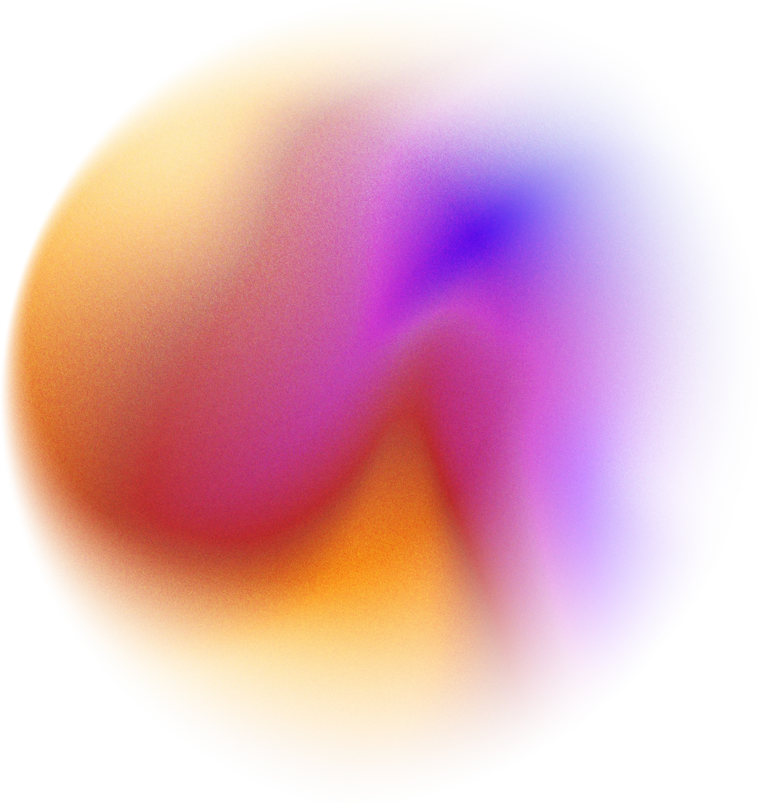
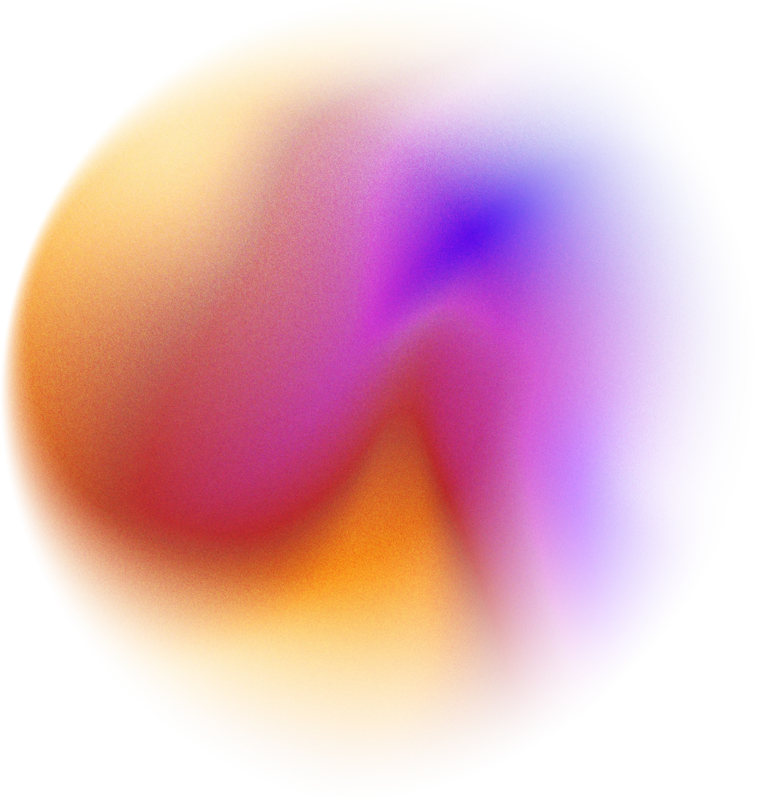
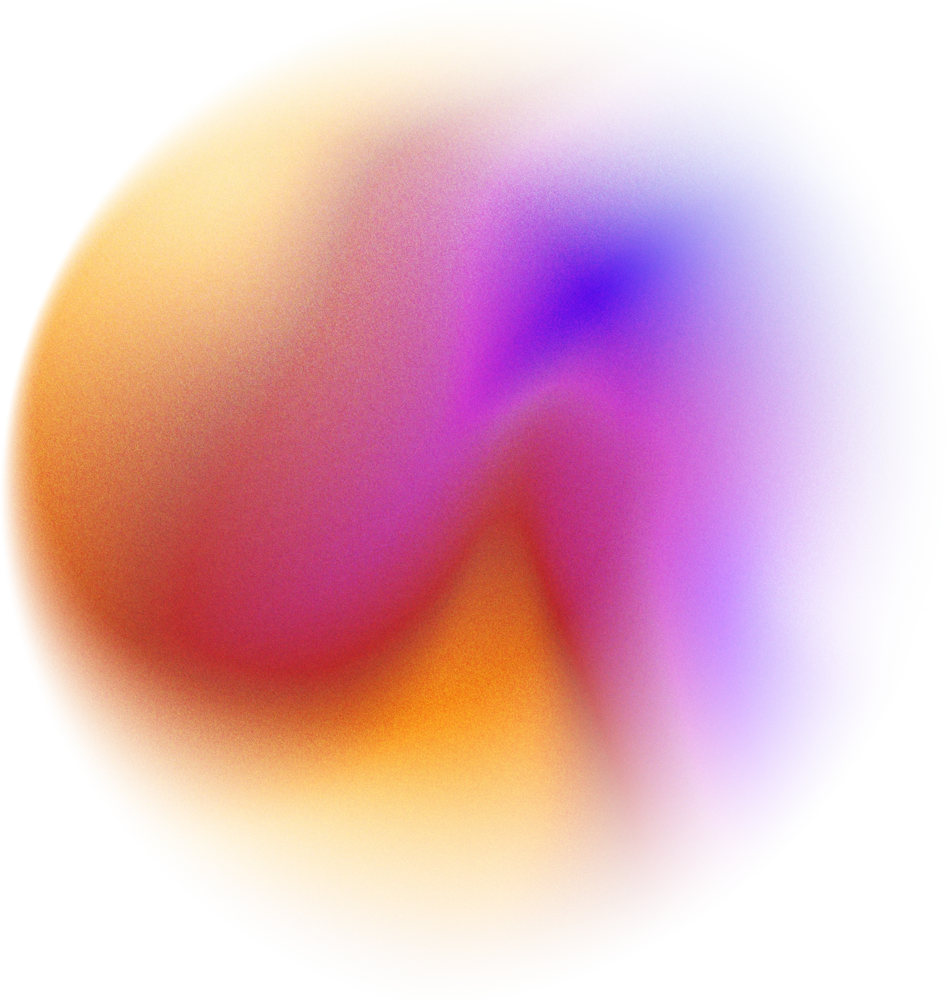

ui/ux designer
with a passion for creating thoughtful and
visually stunning digital experiences.

with a passion for creating thoughtful and
visually stunning digital experiences.
2021, Govt. In-House
Designed and deployed a statewide MIS for tracking project and financial progress of EAP initiatives, improving reporting accuracy across departments.
2024, Govt. In-House
Developed intuitive financial dashboards and reporting interfaces for a state level fund monitoring system, enhancing transparency and inter departmental coordination.
2025
Led design of a statewide portal enabling employees to process mutual transfer requests online, simplifying workflows and boosting adoption among staff.